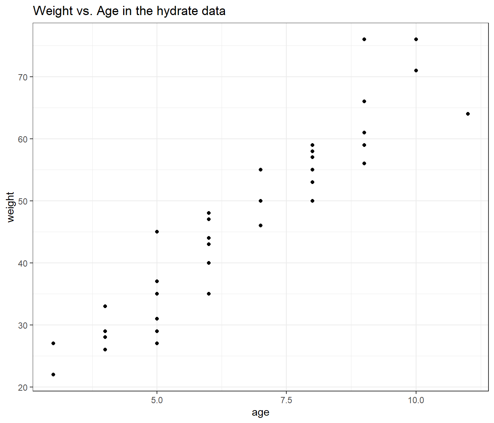

Chapter 5 Multiple Regression with the hydrate data
Recall our study of dehydration recovery from earlier in these notes. The hydrate data describe the degree of recovery that takes place 90 minutes following treatment of moderate to severe dehydration, for 36 children diagnosed at a hospital’s main pediatric clinic.
Upon diagnosis and study entry, patients were treated with an electrolytic solution at one of seven dose levels (0, 0.5, 1.0, 1.5, 2.0, 2.5, 3.0 mEq/l) in a frozen, flavored, ice popsicle. The degree of rehydration was determined using a subjective scale based on physical examination and parental input, converted to a 0 to 100 point scale, representing the percent of recovery (recov.score). Each child’s age (in years) and weight (in pounds) are also available.
Previously, we looked at a scatterplot matrix for these data at the start of our discussion of a simple regression model. Let’s repeat that here.
GGally::ggpairs(dplyr::select(hydrate, age, weight, dose, recov.score),
title = "Scatterplot Matrix for hydrate data")Registered S3 method overwritten by 'GGally':
method from
+.gg ggplot2
What can we conclude here?
- It looks like
recov.scorehas a moderately strong negative relationship with bothageandweight(with correlations in each case around -0.5), but a positive relationship withdose(correlation = 0.36). - The distribution of
recov.scorelooks to be pretty close to Normal. No potential predictors (age,weightanddose) show substantial non-Normality. ageandweight, as we’d expect, show a very strong and positive linear relationship, with r = 0.94- Neither
agenorweightshows a meaningful relationship withdose. (r = 0.16)
5.1 A Multiple Regression for recov.score
Our first multiple linear regression model will predict recov.score using three predictors: dose, age and weight.
Call:
lm(formula = recov.score ~ dose + age + weight, data = hydrate)
Residuals:
Min 1Q Median 3Q Max
-16.682 -6.492 -2.204 7.667 22.128
Coefficients:
Estimate Std. Error t value Pr(>|t|)
(Intercept) 85.4764 5.9653 14.329 1.79e-15 ***
dose 6.1697 1.7908 3.445 0.00161 **
age 0.2770 2.2847 0.121 0.90428
weight -0.5428 0.3236 -1.677 0.10325
---
Signif. codes: 0 '***' 0.001 '**' 0.01 '*' 0.05 '.' 0.1 ' ' 1
Residual standard error: 9.923 on 32 degrees of freedom
Multiple R-squared: 0.4584, Adjusted R-squared: 0.4077
F-statistic: 9.03 on 3 and 32 DF, p-value: 0.00017695.1.1 Model Specification
Call:
lm(formula = recov.score ~ dose + age + weight)The output begins by presenting the R function call. Here, we have a linear model, with recov.score being predicted using dose, age and weight, all from the hydrate data.
5.1.2 Model Residuals
Residuals:
Min 1Q Median 3Q Max
-16.682 -6.492 -2.204 7.667 22.128 Next, we summarize the residuals, where Residual = Actual Value - Predicted Value.
- This gives us a sense of how incorrect our predictions are for the
hydrateobservations.- The residuals will center near 0 (least squares is designed so the mean will always be zero, here the median prediction is 2.2 points too high)
- Here, we predicted a
recov.scorethat was 16.68 points too high for one patient, and another of our predictedrecov.scorevalues was 22.13 points too low. - The middle half of our predictions were between 6.5 points too high (so the residual = observed - predicted is -6.5) and 7.7 points too low.
5.1.3 Model Coefficients
Coefficients:
Estimate Std. Error t value Pr(>|t|)
(Intercept) 85.4764 5.9653 14.329 1.79e-15 ***
dose 6.1697 1.7908 3.445 0.00161 **
age 0.2770 2.2847 0.121 0.90428
weight -0.5428 0.3236 -1.677 0.10325
---
Signif. codes: 0 '***' 0.001 '**' 0.01 '*' 0.05 '.' 0.1 ' ' 1The first column of this table gives the estimated coefficients for our model (including the intercept, and slopes for each of our three predictors). Our least squares equation is recov.score = 85.48 + 6.17 dose + 0.28 age - 0.54 weight.
5.1.4 Interpreting the t tests (last predictor in)
Next to each coefficient is its estimated standard error, followed by the coefficient’s t value (the coefficient value divided by the standard error), and the associated two-tailed p value. The p value addresses \(H_0\): This coefficient’s \(\beta\) value = 0, as last predictor into the model.
- The t test of the intercept is rarely of interest, because
- we rarely care about the situation that the intercept predicts; where all of the predictor variables are equal to zero, and
- we usually are going to keep the intercept in the model regardless of its statistical significance.
The t test for dose tests the hypothesis that the slope of dose should be zero, as last predictor in.
- If the slope of
dosewas in fact zero, that would mean that knowing thedoseinformation would be of no additional value in predicting the outcome after you have accounted forageandweightin your model. - Last predictor in
- This last predictor in business means that the test is comparing a model with
dose,ageandweightto a model withageandweightalone, to see if the incremental benefit of adding dose provides statistically significant additional predictive value forrecov.score. - The t test tells us if
doseis a useful addition to a model that already contains the other two variables. - The p value = .0016, so, at any reasonable \(\alpha\) level, the
dosereceived is a significant part of the predictive model, even after accounting forageandweight.
- This last predictor in business means that the test is comparing a model with
5.1.4.1 The t test of age
The t test of age tests \(H_0\): age has no predictive value for recov.score as last predictor in.
- Here p = .9043, which indicates that
agedoesn’t add statistically significant predictive value to the model once we have adjusted fordoseandweight. - This does not mean that
age, by itself, has no linear relationship withrecov.score, but it does mean that in this model, it doesn’t help to addageonce we already havedoseandweight. - This shouldn’t be surprising, given the strong correlation between
ageandweightshown in the scatterplot matrix.
5.1.4.2 The t test of weight
The t test of weight tests the null hypothesis that weight has no predictive value for recov.score as last predictor in.
- Here p = .1032, which is better than we saw in the
agevariable, but still indicates thatweightadds no significant predictive value to the model forrecov.scoreif we already havedoseandage.
5.1.5 The Effect of Collinearity
The situation we see here with age and weight, where two predictors are highly correlated with one another, making it hard to see significant predictive value for either one of them after the other is already in the model is referred to as collinearity.
- Our usual approach to dealing with this collinearity will be to consider dropping one predictor from our model, and refit.
- Dropping either predictor will likely have a fairly small impact on the fit quality of our model, but if we drop both, we may do a lot of damage.
5.1.6 Confidence Intervals for the Slopes in a Multiple Regression Model
Here are the confidence intervals for the coefficients of our multiple regression model.
2.5 % 97.5 %
(Intercept) 73.325486 97.627225
dose 2.521929 9.817450
age -4.376910 4.930819
weight -1.201974 0.116423We conclude, for instance, with 95% confidence, that that true slope of dose is between 2.52 and 9.82 points on the recovery score scale.
This is pretty different from the confidence interval we found for the slope of dose in a simple regression on dose alone that we saw previously, and repeat below.
2.5 % 97.5 %
(Intercept) 55.826922 71.964589
dose 0.465695 9.295466In both cases, the reasonable range of values for the slope of dose appears to be positive, but the range of values is much tighter in the multiple regression.
5.1.7 Model Summaries
Residual standard error: 9.923 on 32 degrees of freedom
Multiple R-squared: 0.4584, Adjusted R-squared: 0.4077
F-statistic: 9.03 on 3 and 32 DF, p-value: 0.0001769The residual standard error estimates the standard deviation of our model’s errors to be 9.923.
- We’d expect roughly 95% of our residuals to fall between -2(9.923) and +2(9.923), or roughly -20 to +20.
- We’d expect to see virtually no residuals outside the range of \(\pm\) 3(9.923) or roughly -30 to +30.
The coefficient of determination, \(R^2\), is estimated to be 0.4584
- We accounted for just under 46% of the variation in
recov.scoreusingdose,ageandweight.
\(R^2\) will always suggest that we make our models as big as possible, often including variables of dubious predictive value.
- An important thing to realize is that if you add a variable to a model, \(R^2\) cannot decrease.
- Similarly, removing a variable from a model, no matter how unrelated to the outcome, cannot increase the \(R^2\) value.
- Thus, using \(R^2\) as the be-all and end-all of model fit for a regression model goes against the general notion that we would like to have parsimonious models; that is to say, we favor simple models when possible.
The overall ANOVA F test is presented last.
- The test gives an F-statistic of 9.03 on 3 and 32 degrees of freedom, yielding a p value of .00018.
- We can conclude (at any reasonable \(\alpha\) level) that there is statistically significant predictive value somewhere in this model.
- The F test for a multiple regression is a very low standard; specifying only that we have conclusive evidence that some part of the model predicts the outcome to a degree beyond that easily attributed to chance alone.
- We return to the individual t tests to assess significance after adjusting for the other predictors.
- Concluding that the F test is significant means that the multiple \(R^2\) accounted for by the model is also statistically significant.
5.1.7.1 Verifying the \(R^2\) Calculations
The formula for \(R^2\) is simply the sum of squares accounted for by the regression model divided by the total sum of squares.
- This is the same as 1 minus [residual sum of squares divided by total sum of squares].
- We can verify the calculation with the complete ANOVA table for this model
Analysis of Variance Table
Response: recov.score
Df Sum Sq Mean Sq F value Pr(>F)
dose 1 752.15 752.15 7.6379 0.0093992 **
weight 1 1914.07 1914.07 19.4370 0.0001097 ***
age 1 1.45 1.45 0.0147 0.9042753
Residuals 32 3151.22 98.48
---
Signif. codes: 0 '***' 0.001 '**' 0.01 '*' 0.05 '.' 0.1 ' ' 1So \(R^2 = 1 - \frac{SS(Residual)}{SS(Total)} = 1 - \frac{3151.22}{752.15 + 1914.07 + 1.45 + 3151.22} = 1 - \frac{3151.22}{5818.89}\) = 1 - 0.5416 = .4584
If we are fitting a model to n data points, and we have k coefficients (slopes + intercept) in our model, then the model’s adjusted \(R^2\) is \(R^2_{adj} = 1 - \frac{(1-R^2)(n - 1)}{n - k}\).
In the hydrate data, we have n = 36 data points, and k = 4 coefficients (3 slopes, plus the intercept), so \(R^2_{adj} = 1 - \frac{(1-.4584)(36 - 1)}{36 - 4}\) = .4077
- Again, the adjusted \(R^2\) is not interpreted as a percentage of anything, and can in fact be negative.
- \(R^2_{adj}\) will always be less than the original \(R^2\) so long as there is at least one predictor besides the intercept term, so that k > 1 in the equation above.
5.2 ANOVA for Sequential Comparison of Models
Outside of the main summary, we can also run a sequence of comparisons of the impact of various predictors in our model with the anova function.
Analysis of Variance Table
Response: recov.score
Df Sum Sq Mean Sq F value Pr(>F)
dose 1 752.15 752.15 7.6379 0.0093992 **
age 1 1638.51 1638.51 16.6387 0.0002803 ***
weight 1 277.01 277.01 2.8129 0.1032498
Residuals 32 3151.22 98.48
---
Signif. codes: 0 '***' 0.001 '**' 0.01 '*' 0.05 '.' 0.1 ' ' 1This ANOVA table is very different from the one we saw in our simple regression model. The various p values shown here indicate the significance of predictors taken in turn, specifically…
- The p value for \(H_0\):
dosehas significant predictive value by itself is 0.009 - The p value for \(H_0\):
ageadds significant predictive value once you already havedosein the model is 0.0003 - The p value for \(H_0\):
weightadds significant predictive value once you already havedoseandagein the model (i.e. as last predictor in) is 0.1032
Note that this last p value is the same as the t test for weight we have already seen in the main summary of the model.
If we change the order of the predictors entering the model, the main summary of our linear model will not change, but these ANOVA results will change.
Call:
lm(formula = recov.score ~ dose + weight + age, data = hydrate)
Residuals:
Min 1Q Median 3Q Max
-16.682 -6.492 -2.204 7.667 22.128
Coefficients:
Estimate Std. Error t value Pr(>|t|)
(Intercept) 85.4764 5.9653 14.329 1.79e-15 ***
dose 6.1697 1.7908 3.445 0.00161 **
weight -0.5428 0.3236 -1.677 0.10325
age 0.2770 2.2847 0.121 0.90428
---
Signif. codes: 0 '***' 0.001 '**' 0.01 '*' 0.05 '.' 0.1 ' ' 1
Residual standard error: 9.923 on 32 degrees of freedom
Multiple R-squared: 0.4584, Adjusted R-squared: 0.4077
F-statistic: 9.03 on 3 and 32 DF, p-value: 0.0001769Analysis of Variance Table
Response: recov.score
Df Sum Sq Mean Sq F value Pr(>F)
dose 1 752.15 752.15 7.6379 0.0093992 **
weight 1 1914.07 1914.07 19.4370 0.0001097 ***
age 1 1.45 1.45 0.0147 0.9042753
Residuals 32 3151.22 98.48
---
Signif. codes: 0 '***' 0.001 '**' 0.01 '*' 0.05 '.' 0.1 ' ' 1- Does
ageadd significant predictive value to the model includingdoseandweight?- No, because the p value for
ageis 0.904 once we have previously accounted fordoseandweight.
- No, because the p value for
- Does
weightadd significant predictive value to the model that includesdoseonly?- Yes, because the p value for
weightis 0.00011 once we have accounted fordose.
- Yes, because the p value for
5.2.1 Building The ANOVA Table for The Model
Sometimes, we want an ANOVA table for the Regression as a whole, to compare directly to the Residuals. We can build this by adding up the sums of squares and degrees of freedom from the individual predictors, then calculating the Mean Square and F ratio for the Regression.
- The degrees of freedom are easy. We have three predictors (slopes), each accounting for one DF, and we have 32 DF applied to the residuals, so total DF = n - 1 = 35
| ANOVA Table | DF | SS | MS | F | p value |
|---|---|---|---|---|---|
| Regression | 3 | ? | ? | ? | ? |
| Residuals | 32 | 3151.22 | 98.48 | ||
| Total | 35 | ? |
- To obtain the sum of squares due to the regression model, we just add the sums of squares for the individual predictors, so SS(Regression) = 752.15 + 1914.07 + 1.45 = 2667.67
- The total sum of squares is then the sum of SS(Regression) and SS(Residuals): here, 2667.67 + 3151.22 = 5818.89
- Now, we recall that the Mean Square for any row in this table is just the Sum of Squares divided by the degrees of freedom, so that MS(Regression) = 2667.67 / 3 = 889.22
| ANOVA Table | DF | SS | MS | F | p value |
|---|---|---|---|---|---|
| Regression | 3 | 2667.67 | 889.22 | ? | ? |
| Residuals | 32 | 3151.22 | 98.48 | ||
| Total | 35 | 5818.89 |
- The F ratio and p value can be obtained from the original summary of the model.
| ANOVA Table | DF | SS | MS | F | p value |
|---|---|---|---|---|---|
| Regression | 3 | 2667.67 | 889.22 | 9.03 | 0.00018 |
| Residuals | 32 | 3151.22 | 98.48 | ||
| Total | 35 | 5818.89 |
We can use this to verify that the \(R^2\) for the model is also equal to SS(Regression) / SS(Total)
\(R^2 = \frac{SS(Regression)}{SS(Total)} = \frac{2667.67}{5818.89}\) = 0.4584
5.3 Standardizing the Coefficients of a Model
Which of the three predictors: dose, age and weight, in our model for recov.score, has the largest effect?
Sometimes, we want to express the coefficients of the regression in a standardized way, to compare the impact of each predictor within the model on a fairer scale. A common trick is to “standardize” each input variable (predictor) by subtracting its mean and dividing by its standard deviation. Each coefficient in this semi-standardized model is the expected difference in the outcome, comparing subjects that differ by one standard deviation in one variable with all other variables fixed at their average. R can do this rescaling quite efficiently, with the use of the scale function.
5.3.1 A Semi-Standardized Model for the hydrate data
Call:
lm(formula = recov.score ~ scale(dose) + scale(weight) + scale(age),
data = hydrate)
Residuals:
Min 1Q Median 3Q Max
-16.682 -6.492 -2.204 7.667 22.128
Coefficients:
Estimate Std. Error t value Pr(>|t|)
(Intercept) 71.5556 1.6539 43.264 < 2e-16 ***
scale(dose) 5.8602 1.7010 3.445 0.00161 **
scale(weight) -8.0400 4.7937 -1.677 0.10325
scale(age) 0.5809 4.7925 0.121 0.90428
---
Signif. codes: 0 '***' 0.001 '**' 0.01 '*' 0.05 '.' 0.1 ' ' 1
Residual standard error: 9.923 on 32 degrees of freedom
Multiple R-squared: 0.4584, Adjusted R-squared: 0.4077
F-statistic: 9.03 on 3 and 32 DF, p-value: 0.0001769The only things that change here are the estimates and standard errors of the coefficients: every other bit of the output is unchanged from our original summary.
- Each of the scaled covariates has mean zero and standard deviation one.
scale(dose), for instance, is obtained by subtracting the mean from the originaldosevariable (so the result is centered at zero) and dividing that by the standard deviation (so thatscale(dose)has mean 0 and standard deviation 1.)- We interpret the coefficient of
scale(dose)= 5.86 as the change in our outcome (recov.score) that we anticipate when the dose increases by one standard deviation from its mean, while all of the other inputs (weightandage, specifically) remain at their means.
This allows us to compare the effects on recov.score due to dose, to weight and to age in terms of a change of one standard deviation in each, while holding the others constant.
- Which of the inputs appears to have the biggest impact on recovery score in this sense?
5.3.1.1 Interpreting the Intercept in a Model with Semi-Standardized Coefficients
The semi-standardized model has an interesting intercept term. The intercept is equal to the mean of our outcome (recov.score) across the full set of subjects.
- When
scale(dose),scale(weight)andscale(age)are all zero, this means thatdose,weightandageare at their means. - So the intercept tells you the value of
recov.scorethat we would predict when all of the scaled predictors are zero, e.g., when all of the original inputs to the model (dose,weightandage) are at their average values.
5.4 Comparing Fits of Several Possible Models for Recovery Score
Below, I summarize the results for five possible models for recov.score. What can we conclude? By this set of results, which of the models looks best?
| Model | Fitted Equation | \(R^2\) | \(R^2_{adj}\) | RSE | F test p |
|---|---|---|---|---|---|
| [Int] | 71.6 | - | - | 12.89 | - |
| D | 63.9 + 4.88 dose |
.1293 | .1037 | 12.21 | 0.0313 |
| DA | 84.1 + 6.07 dose - 3.31 age |
.4108 | .3751 | 10.19 | 0.0002 |
| DW | 85.6 + 6.18 dose - 0.51 weight |
.4582 | .4254 | 9.77 | 4.1e-05 |
| DAW | 85.5 + 6.17 dose + 0.28 age - 0.54 weight |
.4584 | .4077 | 9.92 | 0.0002 |
It appears as though the DW model is almost as good as the DAW model using the multiple \(R^2\) as a criterion, and is the best of these five models using any of the other criteria.
The five summaries I used to obtain this table were obtained with the following code (not evaluated here):
summary(lm(recov.score ~ 1))
summary(lm(recov.score ~ dose))
summary(lm(recov.score ~ dose + age))
summary(lm(recov.score ~ dose + weight))
summary(lm(recov.score ~ dose + age + weight))5.5 Comparing Model Fit: The AIC, or Akaike Information Criterion
Another summary we’ll use to evaluate a series of potential regression models for the same outcome is the Akaike Information Criterion or AIC. Smaller values indicate better models, by this criterion, which is just a measure of relative quality.
| Model | Intercept only | D | DA | DW | DAW |
|---|---|---|---|---|---|
| AIC | 289.24 | 286.25 | 274.19 | 271.17 | 273.16 |
By the AIC, DW looks best out of these five models.
Note: R uses the AIC function applied to a model to derive these results. For example,
[1] 289.236[1] 273.15655.6 Comparing Model Fit with the BIC, or Bayesian Information Criterion
Another summary we’ll use to evaluate potential regression models for the same outcome is the Bayesian Information Criterion or BIC. Like the AIC, smaller values indicate better models, by this criterion, which is also a measure of relative quality.
| Model | Intercept only | D | DA | DW | DAW |
|---|---|---|---|---|---|
| BIC | 292.4 | 291.0 | 280.5 | 277.5 | 281.1 |
By the BIC, as well, DW looks best out of these five models.
To obtain the results, just apply BIC instead of AIC to the model.
[1] 277.50715.7 Making Predictions for New Data: Prediction vs. Confidence Intervals
The predict function, like the fitted function, when applied to a linear model, can produce the fitted values predicted by the model. Yet there is more we can do with predict.
Suppose we want to use the model to predict our outcome (recovery score, or recov.score) on the basis of the three predictors (dose, age and weight.) Building an interval forecast around a fitted value requires us to decide whether we are:
- predicting the
recov.scorefor one particular child with the specified characteristics (in which case we use something called a prediction interval) or - predicting the mean
recov.scoreacross all children that have the specifieddose,ageandweightcharacteristics (in which case we use a confidence interval).
The prediction interval will always be wider than the related confidence interval.
5.7.1 Making a Prediction using the hydrate data
Now, suppose that we wish to predict a recov.score associated with dose = 2, age = 7 and weight = 50. The approach I would use follows…
modela <- lm(recov.score ~ dose + age + weight, data = hydrate)
newdata <- data.frame(dose = 2, age = 7, weight = 50)
predict(modela, newdata, interval="prediction", level=0.95) fit lwr upr
1 72.61563 52.05549 93.17577 fit lwr upr
1 72.61563 68.85606 76.3752So, our conclusions are:
- If we have one particular child with
dose= 2,age= 7 andweight= 50, we have 95% confidence that therecov.scorefor this child will be between 52.1 and 93.2. - If we have a large group of children with
dose= 2,age= 7 andweight= 50, we have 95% confidence that the averagerecov.scorefor these children will be between 68.9 and 76.4.
5.7.2 A New Prediction?
Suppose that now you wanted to make a prediction for a recov.score with dose = 1, age = 4 and weight = 60. Why would this be a meaningfully worse idea than the prediction we just made, and how does the plot below tell us this?
ggplot(hydrate, aes(x = age, y = weight)) +
geom_point() +
labs(title = "Weight vs. Age in the hydrate data")
5.8 Interpreting the Regression Model: Two Key Questions
Suppose we land, finally, on the DW model…
Call:
lm(formula = recov.score ~ dose + weight, data = hydrate)
Residuals:
Min 1Q Median 3Q Max
-16.613 -6.494 -2.118 7.599 22.248
Coefficients:
Estimate Std. Error t value Pr(>|t|)
(Intercept) 85.5942 5.7971 14.765 4.25e-16 ***
dose 6.1753 1.7633 3.502 0.00135 **
weight -0.5061 0.1131 -4.476 8.56e-05 ***
---
Signif. codes: 0 '***' 0.001 '**' 0.01 '*' 0.05 '.' 0.1 ' ' 1
Residual standard error: 9.774 on 33 degrees of freedom
Multiple R-squared: 0.4582, Adjusted R-squared: 0.4254
F-statistic: 13.95 on 2 and 33 DF, p-value: 4.058e-05Suppose we decide that this model is a reasonable choice, based on adherence to regression assumptions (as we’ll discuss shortly), and quality of fit as measured both by \(R^2\) measures, the various hypothesis tests, and the information criteria (AIC and BIC).
Question 1. Can we summarize the model and how well it fits the data in a reasonable English sentence or two?
- Together, dose and weight account for just under 46% of the variation in recovery scores, and this is highly statistically significant (p < 0.001). Higher recovery scores are associated with higher doses and with lower weights among the 36 children assessed in this study.
Question 2. How might we interpret the coefficient of dose for someone who was smart but not a student of statistics?
- If we have two kids who are the same weight, then if kid A receives a dose that is 1 mEq/L larger than kid B, we’d expect kid A’s recovery score to be a little over 6 points better than the score for kid B.